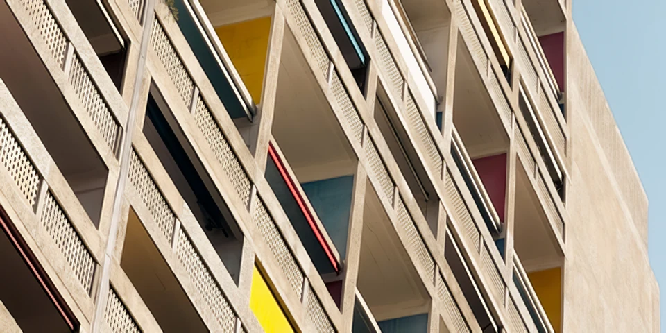

Image and model credits
Where the examples
come from.
Every comparison on this site is a real run of LocalSR. Here is where each photo came from, how the input was made, and which model and computer produced the result.
How they are shown
Each pair is the same part of the input and of the result. The input is enlarged by your browser to the size of the result, the way any image viewer would; the result is shown at its real size. The cut results are saved as WebP at quality 90 (the cat uses the comparison page’s copy), with no sharpening or colour changes. The processing record lists every crop, file and checksum.
Butterfly
A 768 × 1024 phone photo of a Westlicher Scheckenfalter, from my own library. LocalSR upscaled it four times with Best (RealPLKSR ×4 NomosWebPhoto by Philip Hofmann, CC BY 4.0) to 3072 × 4096.
It ran in the packaged engine of LocalSR 0.2.1 on a MacBook Pro with an M1 Pro and 16 GB, on the Apple GPU, in 9.2 seconds for the whole photo. A second run with all network access denied took 10.0 seconds and wrote a byte-identical file.
Cat
A long-haired cat, photographed by Ingo W. Dühring (Unsplash License). As on the comparison page, it was reduced to 256 × 192; no blur, noise or compression was added.
LocalSR upscaled it four times with Best to 1024 × 768. The model ran through PyTorch in fp32, the same way as in the app, on a Linux PC with an AMD Radeon RX 9060 XT: about 0.1 seconds with the model already loaded. The comparison page keeps its inputs enlarged with hard pixels; for the home page the 256 × 192 input was recovered from that copy by averaging each 4 × 4 block.
Ceiling
Painted ceiling beams, photographed with a Sony a6600 at ISO 6400 (6000 × 4000), from my own library. LocalSR removed the noise at the same size with SCUNet Color (Kai Zhang et al., Apache-2.0).
It ran in LocalSR 0.2.1 on the same MacBook Pro, in 117.5 seconds for the whole photo. The page shows a 752 × 564 crop at its real size.
Calf
A 342 × 342 crop of a phone photo of a calf, from my own library, upscaled four times with Best to 1368 × 1368 in LocalSR 0.2.1 on the same MacBook Pro, in 2.4 seconds.
Balconies in Marseille
The photograph
Unité d’Habitation, Marseille, France, photographed by Tim Ziegelbaum. The image is used under the Unsplash License. The photographer is credited for the source image; no endorsement of LocalSR is implied.

From input to output
- Start with the 2268 × 4032 source photograph. Select a landscape crop from pixel coordinates (0, 1900) to (2268, 3034).
- Resize that crop to 480 × 240 pixels with Lanczos resampling. Save as PNG. No additional blur, noise, or compression artifacts are added.
- Run the input through LocalSR's actual Quick Start / SPAN 4x NomosUni processing pipeline. Use 4× output, FP32 precision, a tile size of 256, and a 16-pixel halo.
- Save the resulting 1920 × 960 image as lossless WebP for the comparison. No further sharpening or color changes are applied.
The home page shows the middle of it: input pixels 80 to 400 across (320 × 240) and the matching 1280 × 960 pixels of the result.
View the input · View the actual output · Processing record


The model
4xNomosUni SPAN multijpg by Philip Hofmann, distributed under CC BY 4.0. LocalSR checks the downloaded model against its pinned size and SHA-256 digest before use.
The public processing record includes the model checksum and the application source revision used to make this example. The website repository also contains a reproduction script.
Reading the results
These are chosen examples, not a benchmark or a claim about every photograph. A high-resolution source is only ever used to make the small input; it is never substituted for the result. Measured results across many photos are on the comparison page and in which model for which photo.
Super-resolution predicts plausible structure. Railings, small text, faces and textures can change in ways you may or may not want. Compare the result closely and keep the original.
Back to the examples